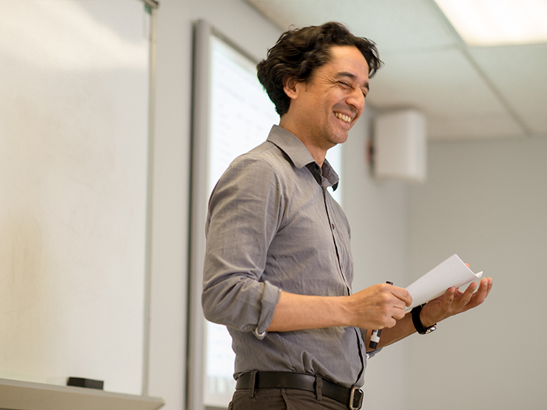

Teaching Overview
I feel that the best path for learning is through enjoyment. I strive to have my students see the joy in math. In many of my classes, students work on projects exploring something related to our class which interests them. A major emphasis in my teaching is getting students involved in research. I am also interested in problem solving, industrial projects, service learning and social justice in mathematics education.
Teaching Information for Fall 2025:
Courses:CSC 108 /MATH 080: Foundations of Data Science
MATH 137: Mathematical Probability and Statistics
Office Hours:
Monday: 11:15 A.M. – 12:45 P.M., Wednesday: 7:00 A.M.-7:45 A.M. and 11:15 A.M.- 12:00 P.M. or by appointment.
